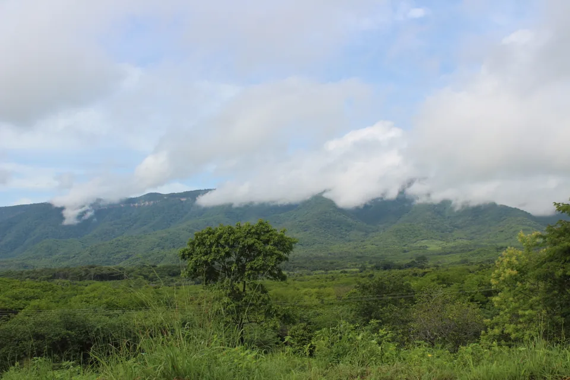

IBIAPABA, CEARÁSITE PESSOAL
Da Ibiapaba. De perto.
TIAGO ISMAR.
Raízes na serra.
Olhar no mundo.


PRAZER, TIAGO.UM OLHAR
UM OLHAR
DAQUI.
Tem um pouco da serra
em tudo que me inspira.
Por aqui, a Ibiapaba aparece como ela é: cheia de vida, de caminhos e de histórias.
Me encontre no Instagram
IBIAPABATIANGUÁ — CE
PARE UM POUCO. OLHE EM VOLTA.
SERRA VIVA.
Não é só cenário.
É parte de mim.
Explore outros olhares A SERRA,
SEM PRESSA.
Tianguá
Nuvens sobre a serraUbajara
Parque Nacional de UbajaraViçosa do Ceará
Os caminhos da IbiapabaGuaraciaba do Norte
Formações rochosas de GuaraciabaSão Benedito
Santuário de Fátima da Serra GrandeIbiapina
A serra entre nuvensCroatá
O relevo de CroatáCarnaubal
Cachoeira Park: marcas do tempoIpu
Bica do IpuIpueiras
Igreja Matriz de IpueirasMucambo
Pôr do sol entre carnaúbasFrecheirinha
Igreja MatrizGraça
Comunidade Rural de CorredorPacujá
Sítio FlorestaReriutaba
Entre caminhos e serraPires Ferreira
Cachoeira EncantadaToque na fotografia para ampliar.
A GENTE SE ENCONTRA.
Uma mensagem. Uma ideia. Um novo assunto.
